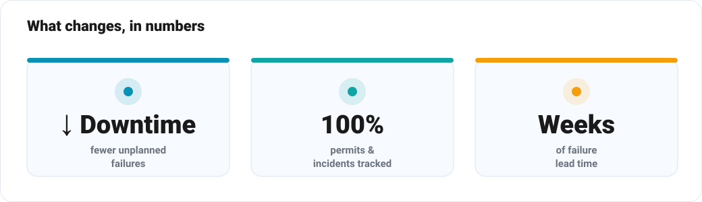
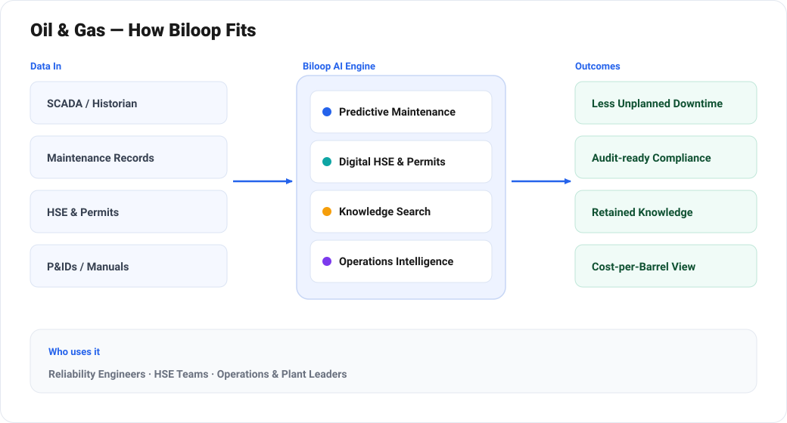
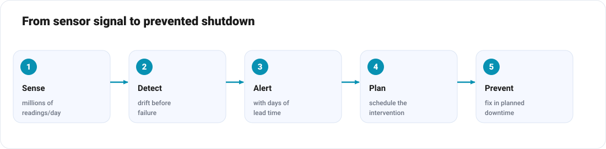

From Reactive to Predictive: How AI Transforms Oil & Gas Operations
The data to prevent the next failure is already sitting in your historian. Here's how AI puts it to work — safely.
Few industries generate as much data — or stand to lose as much from ignoring it — as oil and gas. A single offshore platform streams millions of sensor readings a day. A refinery turnaround coordinates thousands of work orders. And behind all of it sits an unforgiving truth: in this sector, the cost of a failure isn't just dollars. It's safety, environment and licence to operate.
Yet much of that data dies in historians and spreadsheets, and many decisions are still reactive. Mydo by Biloop brings the operational, maintenance, safety and commercial data together and applies AI where the stakes are highest — keeping assets running, people safe, and compliance airtight.

The hard problems of operating O&G
1. Unplanned downtime
An unexpected pump, compressor or turbine failure can halt production and cost enormous sums per day. Time-based maintenance either over-services healthy equipment or misses the failure it was meant to prevent.
2. Safety and environmental risk
Permits to work, incident reports, inspections and compliance certificates are safety-critical — but managing them on paper and spreadsheets is slow and gap-prone, exactly where it must not be.
3. Data silos
SCADA, historians, the maintenance system, the HSE log, procurement and finance rarely talk to each other. The full operating picture exists only in fragments.
4. Aging assets and lost knowledge
Critical equipment ages while experienced engineers retire, taking hard-won knowledge with them. Decisions increasingly rest on data that nobody has the bandwidth to fully analyse.
How Mydo transforms oil & gas operations


Predictive maintenance & asset integrity
Mydo ingests sensor and historian data and learns the normal operating signature of each rotating and static asset. It detects the subtle drift that precedes failure — vibration, temperature, pressure anomalies — and raises a prioritised alert with enough lead time to plan an intervention. Maintenance moves from calendar-based to condition-based, cutting both downtime and unnecessary work.
Digital HSE and permit-to-work
Mydo digitises permits to work, toolbox talks, inspections and incident reports — enforcing the right approvals, flagging conflicting permits, tracking corrective actions to closure, and keeping a complete, audit-ready trail. Leaders get a live safety picture instead of a lagging monthly report.
Unified operations intelligence
By connecting SCADA, maintenance, HSE, procurement and finance, Mydo gives one trusted view from wellhead to refinery gate. Ask "Which assets are driving the most unplanned downtime this quarter?" or "What's our maintenance cost per barrel by site?" and get an answer grounded in live data.
Document & knowledge intelligence
Decades of P&IDs, equipment manuals, inspection reports and procedures become instantly searchable. An engineer can ask a natural-language question and get the right answer with the source document attached — capturing institutional knowledge before it walks out the door.
Production & supply-chain optimisation
Mydo helps forecast production, optimise inventory of critical spares (where a single missing part can idle an asset), and streamline the procurement of long-lead items — reducing both stockouts and carrying cost across remote sites.
Regulatory & emissions reporting
From environmental limits to emissions and regulatory submissions, Mydo automates the data gathering and report generation that compliance teams currently assemble by hand — reducing risk and freeing experts for higher-value work.
Before and after
| Area | Before Mydo | With Mydo |
|---|---|---|
| Maintenance | Time-based / reactive | Predictive & condition-based |
| HSE & permits | Paper & spreadsheets | Digital, enforced, audit-ready |
| Data | Siloed systems | Unified operations view |
| Knowledge | In people's heads | Searchable & retained |
| Reporting | Manual, lagging | Automated & real-time |
Built for safety-critical reality
Mydo is designed to sit alongside existing control and historian systems — reading data, never compromising control-system integrity — and to respect the security and governance requirements of critical infrastructure. Pilots typically start with one asset class or one site to prove value before scaling.